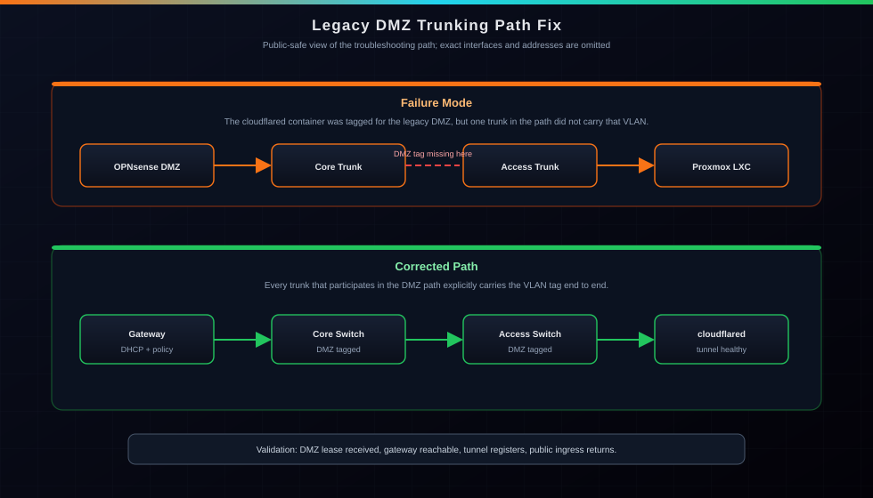

Writeup | Networking & Troubleshooting
VLAN 50 Trunking Path Fix
A deep dive into identifying and resolving a VLAN trunking mismatch between OPNsense and the switching fabric to restore connectivity for a DMZ-isolated Cloudflare Tunnel, then validating the path after migration to Cisco SG300 + Netgear GS728TP.
Historical note: This writeup describes an incident on the legacy VLAN 50 (Public_DMZ). In the current production network, the DMZ is a separate dedicated VLAN — see the Enterprise VLAN Segmentation project for the full design.

STAR Breakdown
- Situation: The Cloudflare Tunnel LXC, isolated in a dedicated Public_DMZ (VLAN 50), was unreachable and failing to receive a DHCP lease from the OPNsense gateway.
- Task: Verify the full VLAN 50 path across OPNsense, Proxmox, and switching during two phases: legacy Catalyst 3750V2 fabric, then post-migration SG300/GS728TP fabric.
- Action: Audited trunks and VLAN membership end-to-end. In the legacy phase, found trunks allowing only the native VLAN and added the legacy DMZ VLAN across the path. In the migration phase, validated SG300 trunk membership across the Proxmox-facing, OPNsense-facing, and access-uplink paths, then confirmed DMZ continuity through the new core/access design.
- Result: Restored and retained L2/L3 pathing through migration. Cloudflared received a DMZ lease, reached its gateway, and public status/web ingress returned to normal.
The Symptom
The cloudflared service is critical to my infrastructure—it's how my public status page
and secure web ingress function without opening ports on my WAN. During an update, the
container lost connectivity. nmap from the LAN couldn't reach it, and it was
failing to get a DHCP lease on the legacy DMZ segment.
The Topology Audit
My network uses a Router-on-a-Stick style model with multiple VLANs. The legacy DMZ path was audited in two snapshots:
Legacy snapshot (Catalyst era):
- OPNsense DMZ subinterface -> Gateway
- Cisco 3750V2 Main -> Trunk to OPNsense
- Cisco 3750V2 Main -> Trunk to Sub Switch
- Cisco 3750V2 Sub -> Trunk back to Main
- Cisco 3750V2 Main -> Trunk to Proxmox Node
Current snapshot (SG300/Netgear era):
- OPNsense DMZ subinterface -> Gateway
- Cisco SG300 -> Trunk to OPNsense LAN
- Cisco SG300 -> Trunk to Proxmox / cloudflared path
- Cisco SG300 -> Trunk uplink to Netgear GS728TP
If any link in either path does not carry the DMZ VLAN, the L2 broadcast domain breaks and DHCP Discover never reaches OPNsense.
Troubleshooting Steps
1. Verifying OPNsense & Proxmox
I first checked the OPNsense interfaces. The DMZ VLAN was active on the parent trunk, and the DHCP server was running. In Proxmox, the LXC was correctly tagged on its bridge with the legacy DMZ VLAN. The issue wasn't at the endpoints.
2. Legacy Discovery (Catalyst)
I logged into the main switch and ran show interfaces trunk.
The results were clear: the DMZ VLAN was missing from the "Vlans allowed on trunk" list.
The ports were trunking, but they were effectively filtering out the DMZ traffic.
3. The Implementation
I moved systematically through the fabric to apply the fix:
! On the legacy core switch
interface range [opnsense-trunk], [switch-uplink], [proxmox-trunk]
switchport trunk allowed vlan add [legacy-dmz-vlan]
exit
wr mem
! On the legacy downstream switch
interface [core-uplink]
switchport trunk allowed vlan add [legacy-dmz-vlan]
exit
wr mem4. Migration Validation (SG300 + GS728TP)
After replacing the 3750 pair with a Cisco SG300-20 core and Netgear GS728TP access switch, I revalidated DMZ continuity. The critical correction was ensuring the DMZ VLAN remained tagged on the Proxmox-facing SG300 trunk while preserving tagged pathing toward OPNsense and the Netgear uplink.
The Result (Across Both Phases)
In both the initial fix and post-migration validation, cloudflared received
a DMZ lease, successfully reached its gateway,
and restored Cloudflare Tunnel health. Public status/web services resumed without exposing
management ports to WAN.
Key Takeaways
Trust but Verify: A trunk port can still drop required VLANs if allowed lists or membership are wrong.
Documentation is a Tool: Having a clear map of which physical ports connected my OPNsense box to my switches allowed me to identify the exact interfaces to audit in seconds rather than guessing.
Migration Discipline: Hardware upgrades are successful only when security boundaries survive the move. VLAN 50 remained isolated from LAN while retaining required pathing.
Related Pages
Gigabit Switching & PoE+ Deployment
The architecture and migration from legacy Catalyst to SG300 core + GS728TP access.
View project ->OPNsense Gateway
How the edge router handles the L3 side of VLAN 50 and DMZ segmentation.
View project ->Zero-Trust Remote Access
The Cloudflare Tunnel design that depends on VLAN 50 DMZ continuity.
View project ->Live Service Status
Public service health that returned once VLAN 50 pathing was corrected.
View project ->